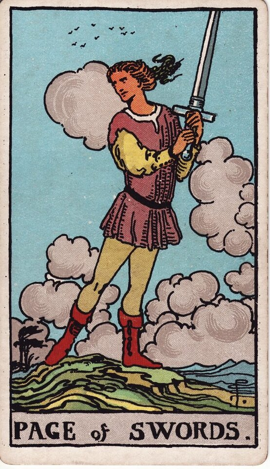

Minor Arcana · Suit of Swords
Page of Swords Tarot Card Meaning
The Page of Swords is the watchful, restless mind - curiosity, new ideas, a message, eyes open. Want to know what it means in your spread? Every reader on our line is hand-vetted - connect in under 60 seconds, $1 for your first minute, hang up anytime.
- Hand-vetted readers
- Available 24/7
- Hang up anytime

Page of Swords - What It Shows
A young figure stands on a windswept hill, sword raised, hair and clouds streaming, glancing back as if alert to something. Energy and restlessness everywhere. The Page is the student of the air suit: a quick, curious, watchful mind that loves ideas and information - eager and sharp, but not yet wise about how to wield the blade of words.
Page of Swords Upright Meaning
Upright, the Page of Swords is curiosity, vigilance, and fresh thinking. New ideas, a message or news, a hunger to learn the truth, or staying alert and observant. It often signals communication incoming. Its core note is a sharp, restless mind switched on - questioning, watching, ready.
Page of Swords Reversed Meaning
Reversed, the sharpness misfires. Gossip, scattered thoughts, hasty or cutting words, all talk and no follow-through, deception, or paranoia. The mind is busy but unfocused or unkind.
Page of Swords as a Person
As a person, the Page of Swords is a quick, curious, talkative, vigilant mind (any age) - clever, analytical, sometimes a bit restless or prone to gossip. Often a student, a sharp communicator, or the bearer of news. Sometimes the "Page" is literally a message.
Page of Swords as Feelings & in Love
As feelings, the Page of Swords is curious but guarded - interested and analysing you, watching and thinking more than openly declaring. Example: a caller asked how a hard-to-read new person felt; the Page of Swords read as genuine interest filtered through caution and observation - they're paying attention and weighing it up, not indifferent.
Page of Swords in Career & Money
For work it's a new idea, research, learning, vigilance, or a communication/contract worth attention. Example: someone deciding whether to dig into a hunch at work pulled this card; the message encouraged the investigation - the Page learns the truth by asking and watching, but should verify before broadcasting.
Page of Swords as Advice
As advice: stay curious and alert, ask the sharp questions, gather information - but think before you speak and verify before you act on what you hear.
Page of Swords Reversed in Love & Career
Reversed, this card deserves a closer look by area. In love, it's hurtful words, overthinking and over-analysing a connection, hot-and-cold communication, or someone all talk with no follow-through - sometimes gossip or half-truths affecting things. In career, reversed it's scattered focus, rumours, cutting remarks, or rushing to act on unverified information. The reversed Page's question is whether the mind is being used to clarify or to cut. A live reader can help you read intent versus immaturity here.
What People Ask About the Page of Swords
The questions readers hear most about this card:
"Is it a message or news?"
Often - communication, frequently with a sharp or truth-revealing edge.
"Page of Swords as feelings?"
Curious, analysing, guarded - interested but watching from a distance.
"Does it mean gossip about me?"
Reversed can - be mindful of rumours; upright is more honest curiosity.
"Person or message?"
Either - a sharp, curious mind, or incoming news.
Page of Swords - Yes or No?
Upright: a cautious yes, with a "stay alert and verify" caveat. Reversed leans no, or "not while it's all talk."
Page of Swords Timing in a Reading
Timing is the least precise thing tarot does, so treat this as a lean, not a date. As an air-suit Page, it reads soon and quick - news, a message, or a development within days to a couple of weeks. Reversed, the news is delayed, scattered, or unreliable. A live reader reads timing from the full spread and your question far more reliably than the card alone.
Page of Swords Card Combinations
Context changes everything - a few pairings readers see often:
Page of Swords + Ace of Swords
A truth-revealing message or a sharp new idea confirmed.
Page of Swords + Seven of Swords
Watch for gossip, half-truths, or someone not being straight.
Page of Swords + Knight of Swords
Curiosity accelerating into fast, direct action.
Page of Swords in a Tarot Reading
A meanings page is the map; a live reading is the territory. The Page of Swords shifts with its position and the cards around it - which is what a hand-vetted reader interprets for your question. See the full Suit of Swords, all 56 cards on the Minor Arcana hub, or start a phone tarot reading.
← Ten of Swords · Next: Knight of Swords →
What Does the Page of Swords Mean for You?
A meanings list is the map; a live reading is the territory. We'll connect you with the right hand-vetted tarot reader in under 60 seconds. $1/min first call · 15 minutes for $10 · hang up anytime · 100% satisfaction promise.
Call (888) 920-6662 NowPage of Swords - Frequently Asked Questions
What does the Page of Swords mean?
Curiosity, vigilance, and new ideas - a sharp, restless, truth-seeking mind.
What does it mean reversed?
Gossip, scattered thoughts, deception, or hasty, cutting words.
What does it mean as feelings?
Curious but guarded - interested and analysing rather than openly expressing.
What does it mean as a person?
A sharp, curious, talkative, vigilant mind - quick and clever.
How much does a reading cost?
First-time callers pay $1/min, or 15 minutes for $10, and you can hang up anytime.
Get Your Tarot Reading Now
Connected to a hand-vetted reader in under 60 seconds, the cards pulled on your real question, and you hang up with clarity.
Call (888) 920-6662